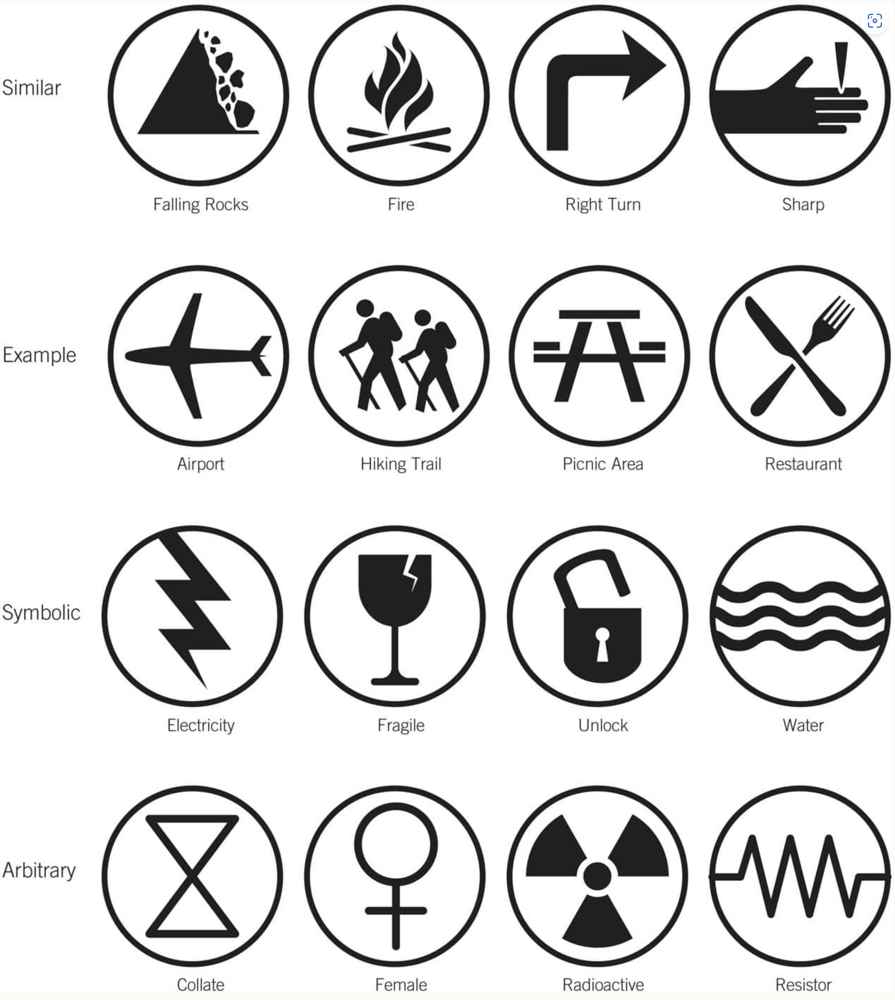
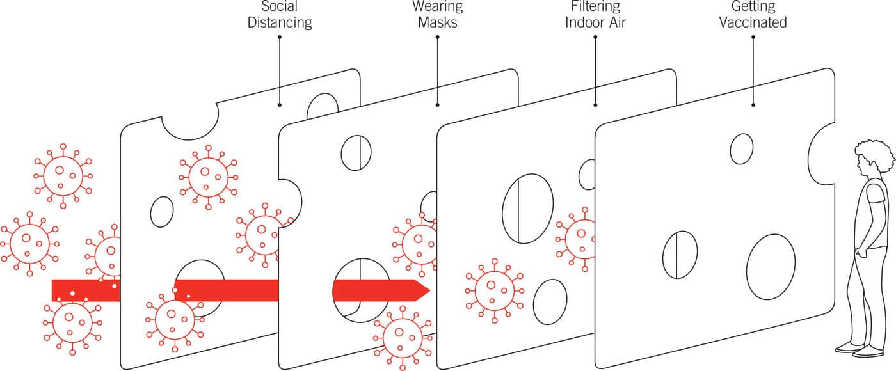

Important Principles of Design#
1. Abbe’s law#
Beware of Angular Error, which may spiral out of control
2. Accessibility#
Perceptibility — Achieved when everyone can perceive the design, regardless of sensory abilities.
Operability — Achieved when everyone can use the design, regardless of physical abilities.
Simplicity — Achieved when everyone can easily learn and understand the design, regardless of experience, literacy, or concentration level.
Forgiveness — Achieved when designs minimize the occurrence and consequences of errors.
3. Ackoff’s Law#
It is better to do the right things wrong than the wrong things right.
The right things refer to your vision / goals
4. Aesthetic-Usability Effect#
Aesthetic things are perceived to be easier to use than ugly things. Aesthetic things are often subjectively rated as easier to use, even when no usability advantage can be objectively measured
5. Affordance#
The physical characteristics of a thing that influence its function and use. When affordances are good, things perform well and are intuitive to use. When affordances are bad, things perform poorly and are hard to use.
9. Aposematism#
The use of conspicuous markings to grab attention and signal danger. (e.g. warning sign)
14. Attractiveness Bias#
A tendency to view attractive people as intelligent, competent, moral, and sociable.
15. Baby-Face Bias#
A tendency to see things with baby-faced features as having the characteristics of babies.
16. Back of the Dresser#
All parts of a design, visible and nonvisible, should be held to the same standard of quality. (e.g. Mac internal components)
17. Biophilia Effect#
A state of reduced stress and improved concentration resulting from nature views. (e.g. looking at trees)
19. Brooks’ Law#
For certain types of projects, adding people to speed things up inadvertently slows them down.
21. Bus Factor#
The number of team members who, if lost, would put a project in jeopardy. (avoid bus factor = 1 using automation, cross-training, code reviews, etc.)
23. Causal Reductionism#
A tendency to fixate on one cause when solving problems, ignoring the reality of multiple causes. (Root cause is plural)
28. Cognitive Dissonance#
A state of mental discomfort due to incompatible attitudes, thoughts, and beliefs. People relieve cognitive dissonance in one of three ways:
Reduce the importance of the conflicting thought
Add a new thought to counteract it
Accept the conflicting thought
32. Comparison#
A method of highlighting relationships by depicting information in controlled ways.
Apples to apples
Single context
Benchmarks
38. Control#
The level of user control should be related to the proficiency and experience of the user.
42. Creator Blindness#
The inability of a creator to see fundamental flaws in their creation.
44. Death Spiral#
A phenomenon in which a social organization persists in behaviors that lead to self-destruction.
46. Depth of Processing#
Thinking hard about a thing improves the likelihood that it can be recalled.
47. Design by Committee#
A design process based on consensus building, group decision-making, and extensive iteration.
Favor design by dictator when projects are time- or budget-driven, requirements are relatively straightforward, consequences of error are tolerable, and stakeholder buy-in is unimportant. E.g. Startups
Favor design by committee when requirements are highly complex, tolerance for risk is low, consequences of error are serious, and stakeholder buy-in is important. E.g. NASA
48. Desire Line#
Traces of use or wear that indicate preferred methods of interaction.
51. Don’t Eat the Daisies#
The fallacy that exhaustive requirements and specification documents lead to better design. Emphasize essential requirements and specifications, detailing lesser requirements separately.
53. Dunning-Kruger Effect#
A tendency for unskilled people to overestimate their competence and performance.
54. Entry Point#
A point of physical or attentional entry that sets the emotional tone for subsequent interactions.
Minimal barriers
Points of prospect
Progressive lures
57. Expectation Effects#
Changes in perception or behavior resulting from personal expectations or expectations of others.
Halo effect
Hawthorne effect
Pygmalion effect
Placebo effect
Rosenthal effect
Demand characteristics
62. Faith Follows Function#
Ideological and spiritual considerations should be secondary to functional considerations. Function should be prioritized. But often the personal biases, beliefs, and values of designers influence their thinking in ways that run counter to function—i.e., function follows their faith. E.g. Feng shui
63. Feature Creep#
A continuous expansion or addition of new product features beyond the original scope. Feature creep is one of the most common causes of cost and schedule overruns. The key driver is the perception that more is better, and therefore features are continuously added and rarely taken away. But adding features adds complexity, and complexity is expensive.
Features are easy or convenient to add—this is particularly common in software development.
Features accumulate over multiple generations of a product.
Features are added to appease internal project stakeholders. This is often due to what’s called the internal-audience problem: Designers or marketers think they know what’s best for the customer, but they discover that customers disagree.
64. Feedback#
Information about status or performance used for confirmation, decision-making, and improvement. Note that for targeted feedback to be effective, the recipient must have the time, opportunity, and ability to act on it.2 Feedback is the foundation for all usability and learning. The rule should be minimum-viable feedback delivered quickly.
65. Feedback Loop#
A cycle in which output feeds back into a system as input, changing subsequent output.
Positive feedback loops: Amplify
Negative feedback loops: Dampen
67. Figure-Ground#
FOR LOGO DESIGN The brain automatically makes elements objects of focus or background.
The figure has a definite shape, whereas the ground is shapeless.
The ground continues behind the figure.
The figure seems closer with a clear location in space, whereas the ground seems farther away and has no clear location in space.
Elements below a horizon line are likely perceived as figures, whereas elements above a horizon line are likely to be perceived as ground.
Elements in the lower regions of a design are likely to be perceived as figures, whereas elements in the upper regions are likely to be perceived as ground
68. First Principles#
Things we know for certain to be true and that are not derived from anything else. First principles are irreducible and immutable
70. Five Hat Racks#
For Sorting and Filtering A metaphor representing the five ways information can be organized.
Category — Organization by similarity or relatedness. E.g. catalog and types of retail merchandise
Time — Organization by chronological sequence. E.g. historical timelines, meeting agendas
Location — Organization by geographical or spatial reference. E.g. historic sites, emergency exit maps, and travel guides
Alphabet — Organization by alphabetical sequence. E.g. dictionaries
Continuum — Organization by magnitude (e.g., highest to lowest, best to worst)
72. Flexibility Tradeoffs#
As the flexibility of a design increases, the performance of the design decreases.
73. Flow#
Just right! A state of immersion so intense that awareness of the real world is lost. Nine components of flow have been proposed:
Goals—People can achieve the goal with their abilities and skill set.
Concentration—People are able to focus deeply.
Loss of self—People lose awareness of themselves and their thoughts.
Time—People lose the sense of the passage of time.
Feedback—People receive clear and immediate feedback.
Balance—People feel a balance between skill level and the challenge.
Control—People have a sense control over the activity.
Rewarding—People find the activity enjoyable on its own merits.
Immersion—People become absorbed and lost in the activity.
74. Forgiveness#
Designs should help people avoid errors and protect them from harm when they do occur.
75. Form Follows Function#
Aesthetic considerations should be secondary to functional considerations.
76. Framing#
A method of presenting choices in specific ways to influence decision-making and judgment. Positive vs Negative Reinforcement
79. Gamification#
Using gaming strategies in nongame contexts to enhance experience and modify behavior. The SAPS model purports to list in order the things people most desire:
Status
Access
Power
Stuff
80. Garbage In–Garbage Out#
The quality of system output is largely dependent on the quality of system input.
Problems of type - Problems of type are generally caused by a class of errors called mistakes—incorrect actions caused by conscious actions.
Problems of quality - Problems of quality are generally caused by a class of errors called slips—incorrect actions caused by unconscious, accidental actions.
81. Gates’ Rule of Automation#
Automation applied to an operation will magnify both its efficiencies and deficiencies.
85. Groupthink#
A decision-making phenomenon that occurs when group harmony is overprioritized. Groupthink is a dysfunctional group dynamic that occurs when agreement and conformity are prioritized over critical analysis and debate, often leading to poor decision-making outcomes. Proposed symptoms of groupthink include:
Culture of compliance
Self-censorship
Mindguards
Apparent unanimity
Illusion of invulnerability
Illusion of morality
Outgroup bias
Confirmation bias
86. Gutenberg Diagram#
A diagram that describes the pattern followed by the eyes when looking at a page of information. The tendency to follow this left-right, top-bottom path is attributed to reading gravity - habit formed from reading.
88. Hanlon’s Razor#
Never attribute to malice what can be adequately explained by incompetence.
89. Hick’s Law#
Time to make a decision increases as the number of decision options increases. All tasks consist of four basic steps:
Identify a problem or goal.
Assess the available options to solve the problem or achieve the goal.
Decide on an option.
Implement the option. Hick’s law applies to the third step: Decide on an option. However, the law does not apply to decisions that involve significant levels of searching, reading, or complex problem solving. The law is decreasingly applicable as the complexity of tasks increases.
Menus The time to select an item from a simple software menu increases with the number of items.
Predatory Behavior The time for a predator to target prey increases with the number of prey.
Simple Tasks The time to press the button that matches a changing light color increases with the number of colors.
Test Options Hick’s law does not apply to tasks that involve significant levels of reading and problem solving, like taking a test.
Device Settings The time to make simple decisions about adjustments on a device increases with the number of controls.
Martial Arts The time for a martial artist to block a punch increases with the number of known blocking techniques.
Braking The time to press the brakes to avoid hitting an obstacle increases if there is an opportunity to steer around it.
Road Signs The time for a driver to make a turn based on a particular road sign increases with the total number of road signs.
90. Hierarchy of Needs#
A hierarchy of user-centered goals that a design must satisfy to achieve optimal success. The hierarchy of needs specifies that a design must serve low-level needs (e.g., it must function) before the higher-level needs, such as creativity, can begin to be addressed. The five key levels of needs in the hierarchy from lowest to highest are:
Functionality
Reliability
Usability
Proficiency
Creativity
94. Iconic Representation#
The use of pictorial images to improve recognition and recall.

95. Identifiable Victim Effect#
A single, identifiable victim elicits more helping behaviors than a group of anonymous victims.
Number of victims
Familiarity of victims
Impact of helping
Authenticity of the victim and their plights
A single death is a tragedy; a million deaths is a statistic. — Joseph Stalin
100. Iron Triangle#
A model that proposes three constraints for all projects: time, cost, and scope. The iron triangle is commonly introduced by the expression, You can have it good, fast, or cheap; pick two. In most real-world cases, however, project owners can reliably preserve just one constraint, not two.
102. Kano Model#
A model for understanding customer needs and then prioritizing design features accordingly.
Delighter features—Product features that create surprise and delight. Customers are typically unaware of delighters or the problems they solve until they are experienced, after which they can’t imagine life without them. This also means that designers can’t identify delighters by asking or surveying users because customers have no frame of reference for the features.
Performance features—Product features that are known and sought out by customers. Customers typically research and compare products based on performance features to make their buying decisions. Accordingly, performance features can be identified through focus groups and surveys. Some competitive baseline level of performance features must be present for a product to be successful.
Threshold features—Product features that are assumed to be present and to perform well. Customers typically do not consider threshold features, as they are considered too basic and fundamental to merit attention. Products get no credit for having threshold features that work well, but they get severely punished for not having them.
Remember, customers can’t tell you what delighters are and won’t tell you what threshold features are Ensure that products have at least one delighter feature (however unrefined), a competitive set of performance features (fairly refined), and a complete set of threshold features (very refined).
104. Knowing-Doing Gap#
The divide that exists between knowing how to do something and actually doing it.
Causes: (1) talking is mistaken for doing (2) resistance to change (3) fear of failure (4) measuring the wrong things (5) internal competition
Lead with why—Explain why people are being asked to do something before explaining how to do it.
Be intentional about execution—Classroom instruction and abstract presentations tend not to transfer to the field.
Forgive errors for action—Create a bias for action that is tolerant of mistakes and failure.
Eliminate internal competition—Avoid teams competing with one another, especially when compensation or incentives are involved. Internal competition creates barriers to collaboration and invariably renders customer interests secondary to team interests.
Measure what matters—Focus on measuring the few things that matter most. In the age of big data, it is tempting to engage in kitchen-sink analytics; but this risks distracting from what’s important.
Walk the talk!
105. Learnability#
The ease with which a new thing can be understood and productively used.
The four pillars of learnability are:
Consistency
Discoverability
Responsiveness
Simplicity
Learnability does not mean leading with tutorials or instruction. Just the opposite: If a system is learnable, instructions and tutorials aren’t needed.
108. Levels of Invention#
A model that classifies inventions based on complexity, nonobviousness, and impact.
Level 1: Minor Improvements Solves a simple problem by refining existing designs, leveraging common knowledge and common sense within a domain. These improvements are generally not sufficiently novel or nonobvious to be considered inventions. Requires 1 to 10 iterations.2
Level 2: Major Improvement Solves a complex problem by improving upon one key aspect of that problem, leveraging expertise and best practices within a domain. Designs at this level and above are considered sufficiently novel and nonobvious to be inventions. Requires 10 to 100 iterations.
Level 3: Major Innovation Solves a complex problem by conceptualizing it in a new way, leveraging knowledge and best practices from other domains. Requires multiple level 2 inventions to be in place and 100 to 1,000 iterations.
Level 4: Significant Innovation Solves a newly discovered problem, requiring a design approach that leverages new science and technology. Requires multiple level 3 inventions to be in place and 1,000 to 100,000 iterations.3
Level 5: Revolutionary Breakthrough Solves a newly discovered problem of great significance, requiring an approach that leverages a new scientific breakthrough. Requires multiple level 4 inventions to be in place and 100,000+ iterations.4
109. Leverage Point#
A place within a system where small changes produce big effects. The concept is commonly known by metaphors such as silver bullets, unicorns, miracle cures,
Mindsets
Goals
Strategy
Structure
Information
112. Maintainability#
The ease with which a thing can be accessed, inspected, repaired, and serviced.
Accessibility
Comprehensibility
Interchangeability
Modularity
Visibility
Prioritize maintainability from the beginning of the design process. Don’t let it be an afterthought. Keep humans in mind as the maintainers.
114. Maslow’s Hammer#
The tendency to approach problems based on the tools and expertise at hand. “If the only tool you have is a hammer, [it is tempting] to treat everything as if it were a nail” functional fixedness, which limits a person’s ability to “think outside the tool”
115. Most Advanced Yet Acceptable (MAYA)#
A strategy for determining the most commercially viable aesthetic for a design. a balancing act between two variables: typicality and novelty
117. Miller’s Law#
The number of objects an average person can hold in working memory is 7±2. More recent studies put the number of things one can remember at 4±1
118. Mimicry#
Copying properties from familiar things in order to realize benefits of those properties.
Surface mimicry
Behavioral mimicry
Functional mimicry - Should be performed with caution
125. Not Invented Here#
A tendency to oppose ideas and innovations that originate outside of your social group.
Four social dynamics underlie NIH:2
Belief that internal capabilities are superior to external capabilities
Fear of losing control
Desire for credit and status
Significant emotional and financial investment in internal initiatives
The best way to address NIH is through prevention.
126. Nudge#
A method of influencing behavior without restricting options or changing incentives.
Smart defaults - do the least harm and greatest good
Clear feedback - reinforce desired actions / punish undesired behaviors
Aligned incentives
Structured choices
Visible goal
131. Paradox of Great Ideas#
Great ideas are indistinguishable from crazy ideas when first introduced.
134. Peak-End Rule#
People remember and judge an experience based on its most intense moment and its end. Designers should therefore prioritize the beginnings, peaks, and ends of experiences in their design, disproportionately investing in them to ensure people will remember the overall experience more fondly.
136. Performance vs. Preference#
Increasing performance does not necessarily increase desirability.
138. Perverse Incentive#
An incentive that unintentionally worsens the problem it seeks to solve.
Boomerang effects - Backfire
Cheating - cheat to get incentives
Collateral damage
139. Phonetic Symbolism#
The meaning conveyed by the sounds of words. s, f, v, z, e (bee), i (sit), a (hate), e (best) — are associated with smallness, femininity, and passivity p, k, t, b, g, d, k, o (dome), o (cot), a (can), u (food), u (put), u (luck), a (father) - are associated with largeness, masculinity, and aggression.
141. Play Preferences#
A tendency for male children and female children to like different kinds of play. Male children tend to engage in play activities that emulate hunting-related behaviors, whereas female children tend to engage in play activities that emulate nurturing-related behaviors.
143. Premature Optimization#
Making elements of a design efficient before they are recognized as important or even needed.
145. Process Eats Goal#
A situation in which people follow a process that undermines the greater goal.
Causes:
Inflexible, rule-based cultures
Process focus versus goal focus
Misaligned incentives—Incentives that improve process
147. Progressive Disclosure#
A method of managing complexity in which only necessary or requested information is displayed. Progressive disclosure involves separating information into multiple layers and only presenting layers that are necessary or relevant.
148. Progressive Subtraction#
Reducing the number of perceptible elements in a design over time.
149. Propositional Density#
The number of independent meanings conveyed by a design.
Surface propositions
Deep propositions
PD > 1 are more interesting and engaging
150. Prospect-Refuge#
A preference for environments where people can see without being seen. The prospect-refuge principle suggests that people prefer:
The edges, rather than the middles of spaces
Spaces with ceilings or covers overhead
Spaces with few access points (protected at the back or side)
Spaces that provide unobstructed views from multiple vantage points
Spaces that provide a sense of safety and concealment
154. Reciprocity#
The tendency for people to give back to those who have given to them.
157. Reverse Salient#
An element that limits the overall performance of the system of which it is part. A reverse salient is a metaphor that borrows from military parlance, referring to a section of an advancing military force that lags behind and impedes the rest of the force from achieving its objective.
163. Savanna Preference#
A preference for savanna-like environments over other types of environments.
164. Scaling Fallacy#
The assumption that designs that work at one scale will work at smaller or larger scales. There are two basic kinds of scaling assumptions to avoid
Load Assumptions
Interaction Assumptions
165. Scarcity#
Things become more desirable when they are in short supply or occur infrequently.
Five tactics are commonly employed to apply the principle of scarcity:
Exclusive information
Limited access
Limited time
Limited number
Suddenness
169. Shaping#
Training a target behavior by reinforcing successive approximations of that behavior.
174. Status Quo Bias#
A preference for things as they are, even when a change would improve things. The status quo bias refers to a preference for avoiding change and maintaining the current situation.
175. Stickiness#
Properties of information that increase recognition, recall, and voluntary sharing. Stickiness refers to the ability of certain ideas to become lodged in the cultural consciousness.
Simplicity
Surprise
Concreteness
Credibility
Emotion
Story
176. Storytelling#
Evoking imagery, emotions, and understanding through the presentation of events.
Setting
Characters
Plot
Invisibility
Mood—Music
Movement
177. Streetlight Effect#
A bias to search for things where it is easiest. “‘Not everything that can be counted counts, and not everything that counts can be counted”. What is counted may simply be due to convenience, and what is not counted may simply be due to inconvenience. Beware of The path of least resistance
179. Sunk Cost Effect#
The tendency to keep investing in an endeavor because of past investments in that endeavor. People are susceptible to the sunk cost effect because they are motivated to believe they made competent decisions, because they fear losses more than they desire gains, and because they do not want to feel or appear wasteful. Recognizing the sunk cost effect is the first step to managing it. In decisionmaking contexts, focus on current cost-benefits only. Set clear exit criteria from the beginning to disrupt the effect and establish when investments should stop. Beware the words, “We have too much invested to quit”.
Don’t cling to a mistake just because you spent a lot of time making it. — Aubrey de Grey
181. Survivorship Bias#
The tendency to overemphasize things that survive a selection process. The survivorship bias is a type of selection bias that occurs when conclusions are drawn based on a group that survived some selection process, ignoring the group that didn’t survive
182. Swiss Cheese Model#
A model describing how risks combine to cause accidents and other bad outcomes. The Swiss cheese model is a risk management framework based on the metaphor of Swiss cheese slices stacked next to one another. Each slice of cheese represents a layer of defense against an undesirable outcome, and the holes in the slices represent weaknesses or gaps in those defenses.
Active failures—Unsafe acts committed by people.
Latent failures—Poorly designed elements in procedures, systems, buildings, etc. that lend themselves to errors.
Bad outcomes result when the latent-failure holes and active-failure holes line up across multiple slices, allowing undesirable things to get through. 
185. Threat Detection#
Threatening things are detected more efficiently than nonthreatening things.
190. User-Centered vs. User-Driven Design#
A focus on understanding and meeting user needs versus simply implementing user requests. Designers should listen to everyone but trust no one; record how people say they act, but then observe what they actually do.
191. Veblen Effect#
A tendency to find a product more desirable because it has a high price.
The Veblen effect is potentially applicable when a good or service is:
Plainly visible to others
Strongly associated with status or wealth
Distinguishable from competitors and knockoffs
Priced high relative to competitors
198. Weakest Link#
An element designed to fail in order to protect more important elements from harm.
Fail and passively minimize damage—For example, electrical circuits are protected by fuses, which are designed to fail so that a power surge doesn’t damage the circuit. The fuse is the weakest link in the system but, in failing, passively protects the system.
Fail and activate additional systems that minimize damage—For example, automatic sprinkler systems in a building are typically activated by components that fail (e.g., liquid in a glass cell that expands to break the glass when heated), which then activate the release of the water to extinguish a fire.
Applying the weakest link principle involves several steps:
Identify a failure condition.
Identify or define the weakest link in the system for that failure condition.
Further weaken the weakest link and strengthen the other links as necessary to address the failure condition.
Ensure that the weakest link will only fail under the appropriate, predefined failure conditions.
199. WYSIWYG#
What a person sees in a design context should be what they get in a delivery context. The principle applies to any environment in which a design is translated from one context or medium to another
Real-time reflection
Point-in-time previews (Preview)
172. Social Proof#
When people don’t know how to act, think, or feel, they tend to copy others.